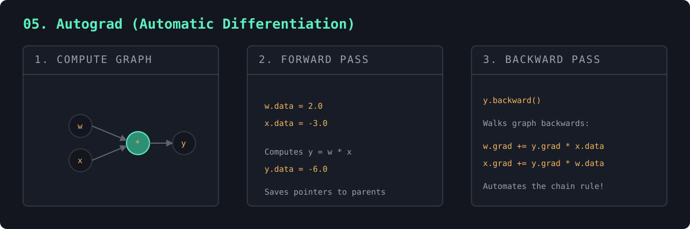

We've hand-derived gradients three times. PyTorch does it automatically — and here's how, in miniature. Every Value remembers its parents and a local rule for one step of the chain rule. Calling .backward() walks the graph in reverse and assembles the whole derivative.
The proof: the auto-computed gradient matches a numerical estimate exactly. You write only the forward math; the backward pass builds itself. That's all PyTorch's autograd is.
Hand-deriving gradients doesn't scale, so frameworks use reverse-mode automatic differentiation. As the forward pass runs, it records a computational graph: every intermediate value remembers which values produced it and a local rule for its derivative. This is not numerical approximation nor symbolic algebra — it's exact, computed by composing local derivatives.
The backward pass walks that graph from the output back to the inputs in topological order, multiplying and accumulating local derivatives (the chain rule) to get ∂loss/∂parameter for every parameter at once. Remarkably, the whole backward pass costs about the same as one forward pass — which is what makes training networks with billions of parameters feasible.

forward output: Value(data=0.7064) gradients (computed automatically): w1.grad = 1.0019 numeric check of w1.grad: 1.0019 (matches)
"""
#5 in the "NN to tiny LLM" ladder. (the "aha" rung)
So far we've hand-derived every gradient with the chain rule. PyTorch does this
for you AUTOMATICALLY. This file builds a tiny version of that magic — a
scalar-valued autograd engine, in the spirit of Karpathy's "micrograd".
The trick: every Value remembers
(a) the numbers that produced it (its "parents"), and
(b) a local rule for sending gradient back to those parents (`_backward`).
Calling `.backward()` on the final result walks this graph in reverse, applying
the chain rule at each node. You write the FORWARD math normally; the backward
pass assembles itself. That is the entire idea behind PyTorch's autograd.
Run with: python autograd.py
"""
import math
class Value:
"""A single scalar that tracks how it was computed, so it can backprop."""
def __init__(self, data, _parents=(), _op=""):
self.data = data
self.grad = 0.0 # d(final output) / d(this value)
self._parents = set(_parents)
self._op = _op # label, for debugging/printing
self._backward = lambda: None # how to push grad to parents
def __repr__(self):
return f"Value(data={self.data:.4f}, grad={self.grad:.4f})"
# --- Operations. Each builds a new Value AND defines its local backward. ---
def __add__(self, other):
other = other if isinstance(other, Value) else Value(other)
out = Value(self.data + other.data, (self, other), "+")
def _backward():
# d(a+b)/da = 1, d(a+b)/db = 1 -> gradient flows through unchanged.
self.grad += out.grad
other.grad += out.grad
out._backward = _backward
return out
def __mul__(self, other):
other = other if isinstance(other, Value) else Value(other)
out = Value(self.data * other.data, (self, other), "*")
def _backward():
# d(a*b)/da = b, d(a*b)/db = a
self.grad += other.data * out.grad
other.grad += self.data * out.grad
out._backward = _backward
return out
def __pow__(self, power):
out = Value(self.data ** power, (self,), f"**{power}")
def _backward():
self.grad += (power * self.data ** (power - 1)) * out.grad
out._backward = _backward
return out
def tanh(self):
t = math.tanh(self.data)
out = Value(t, (self,), "tanh")
def _backward():
# d(tanh(x))/dx = 1 - tanh(x)^2 — the same rule we used in #4.
self.grad += (1 - t ** 2) * out.grad
out._backward = _backward
return out
# Conveniences so we can write natural expressions.
def __neg__(self): return self * -1
def __sub__(self, other): return self + (-other)
def __radd__(self, other): return self + other
def __rmul__(self, other): return self * other
def backward(self):
"""Run the chain rule over the whole graph, leaf-ward from `self`."""
# 1. Topologically order every node behind this one.
topo, visited = [], set()
def build(v):
if v not in visited:
visited.add(v)
for parent in v._parents:
build(parent)
topo.append(v)
build(self)
# 2. Seed: d(self)/d(self) = 1, then apply each _backward in reverse.
self.grad = 1.0
for node in reversed(topo):
node._backward()
if __name__ == "__main__":
# A tiny neuron: out = tanh(w1*x1 + w2*x2 + b)
x1, x2 = Value(2.0), Value(0.0)
w1, w2 = Value(-3.0), Value(1.0)
b = Value(6.88)
n = x1 * w1 + x2 * w2 + b
out = n.tanh()
print("forward output:", out)
out.backward() # <-- gradients computed automatically, no hand-derivation
print("\ngradients (how each input nudges the output):")
print(f" x1.grad = {x1.grad:.4f}")
print(f" w1.grad = {w1.grad:.4f}")
print(f" x2.grad = {x2.grad:.4f}")
print(f" w2.grad = {w2.grad:.4f}")
print(f" b.grad = {b.grad:.4f}")
# Sanity check w1.grad numerically: nudge w1 a hair and see how out moves.
eps = 1e-6
base = (x1.data * w1.data + x2.data * w2.data + b.data)
f = lambda w: math.tanh(x1.data * w + x2.data * w2.data + b.data)
numeric = (f(w1.data + eps) - f(w1.data)) / eps
print(f"\nnumeric check of w1.grad: {numeric:.4f} (should match above)")